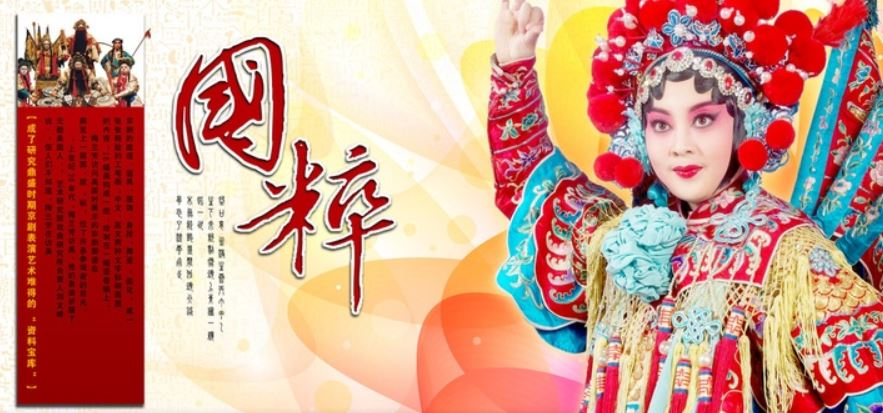

京剧，曾称平剧，中国五大戏曲剧种[1]之一，场景布置注重写意，腔调以西皮、二黄为主，用胡琴和锣鼓等伴奏，被视为中国国粹，中国戏曲三鼎甲“榜首”。 徽剧是京剧的前身。清代乾隆五十五年（1790年）起，原在南方演出的三庆、四喜、春台、和春， 四大徽班陆续进入北京，他们与来自湖北的汉调艺人合作，同时又接受了昆曲、秦腔的部分剧目、曲调和表演方法，吸收了一些地方民间曲调，通过不断的交流、融合，最终形成京剧。京剧形成后在清朝宫廷内开始快速发展，直至民国得到空前的繁荣。 京剧走遍世界各地，分布地以北京为中心，遍及中国，成为介绍、传播中国传统艺术文化的重要媒介。在2010年11月16日，京剧被列入“人类非物质文化遗产代表作名录”。

京剧--发展
京剧--意义
中国戏曲历经八百余年，传承悠久，是中国传统艺术的重要组成部分。从金元杂剧到明清传奇；从昆（曲）弋（阳腔）繁荣到四大徽班进京；从京剧诞生到成为“国粹”走进黄金时代，二百年的京剧史里产生了程长庚、谭鑫培、杨小楼、梅兰芳、马连良等一代又一代表演艺术大师。以富连成为代表的众多戏曲科班培养了数以千计的优秀演员，支撑着近百年京剧艺术殿堂。星罗棋布的戏楼剧场提供了京剧繁荣的舞台，精良独特的器乐、道具、戏装行业为京剧演出增色生辉。
京剧的主体在中国文化整体中更偏于民间文化或曰底层文化，即使它因满清帝后及八旗王公 青睐有加而迅速繁荣，也不足以改变美学上的这一特质。当然，恰因基于民间趣味的京剧从清末直到整个20世纪获得了此前所有民间艺术从未有过的地位，它也从艺术本体的层面，最大限度地扩展了民间文化与美学的影响，提升了民间趣味在中国文化传统中的地位。